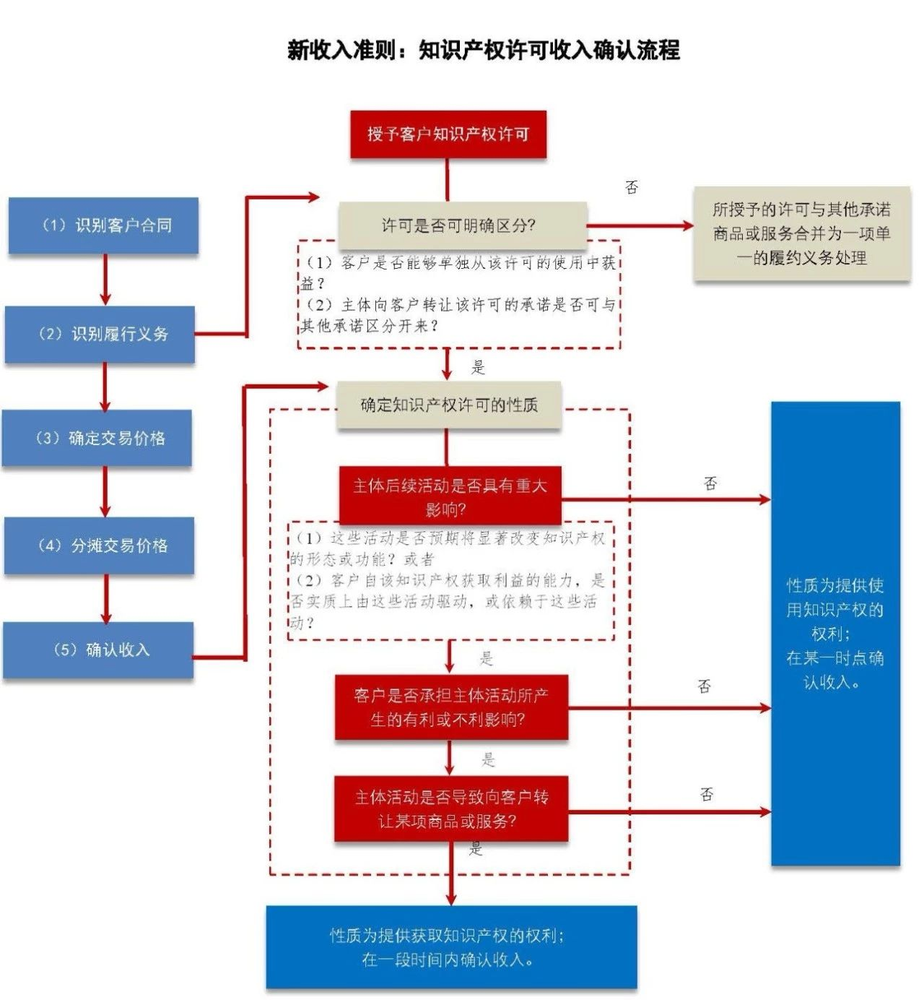

天职国际会计师事务所
取得软件访问权的会计处理
IFRIC撤销议题选注20190422
在2018年9月、11月的会议中，IFRIC讨论了“软件即服务（Software as a Service，SaaS）”云计算协议的会计处理。在2019年3月的会议中，IFRIC对该议题作出了最终决议。
会议时间：2019年3月
议题：客户获得访问供应商云托管软件的权利（《国际会计准则第38号——无形资产》）
议题概要：
委员会收到一份关于客户如何对“软件即服务”云计算协议进行会计处理的咨询，在该协议中，客户签订合同支付费用，以换取在指定期限内获得访问供应商应用软件的权利。供应商的软件运行在由供应商管理和控制的云基础设施（cloud infrastructure）上。客户可根据需要通过互联网或专用线路访问软件。本合同不向客户转让有形资产的任何权利。
客户是在合同开始日获得了一项软件资产还是一项在合同期内的服务？
委员会指出，如果满足以下条件之一，则客户在合同开始日获得了一项软件资产：（1）该合同包含了软件租赁；或者（2）客户在合同开始日获得了对软件的控制权。
软件租赁
《国际财务报告准则第16号——租赁》将租赁定义为：“让渡在一段时间内使用资产（标的资产）的权利以换取对价的合同或合同的一部分”。《国际财务报告准则第16号》第9段（注：①）和第B9段（注：②）解释了，如果在整个使用期间，客户同时拥有以下权利，则合同让渡了一项资产的使用权：
（1）获得几乎所有因使用被识别资产所产生的经济利益的权利；以及
（2）主导使用被识别资产的权利。
《国际财务报告准则第16号》第B9-B31段提供了租赁定义的应用指引。除其他要求外，该应用指引规定，客户拥有在整个使用期间变更资产的使用方式和使用目的的决策权，则客户通常拥有主导资产使用的权利。因此，在包含租赁的合同中，供应商放弃了这些决策权，并将其在租赁开始日向客户转让。
委员会注意到，获得未来访问供应商在其云基础设施上运行软件的权利，本身并未赋予客户有关该软件的使用方式和使用目的的任何决策权——供应商可能拥有这些权利，例如，通过决定如何及何时更新或重新设定该软件，或者决定该软件在哪个硬件（或基础设施）上运行。因此，如果合同仅向客户让渡了在合同期内获得访问供应商应用软件的权利，则该合同未包含软件租赁。
软件无形资产
《国际会计准则第38号》将无形资产定义为：“没有实物形态的可辨认非货币性资产”。它指出，资产是主体控制的资源，同时，第13段规定，“如果主体有权获得潜在资源产生的未来经济利益，并能约束其他方获取这些利益，则该主体控制了该资产。”
委员会注意到，如果合同仅向客户让渡了在合同期内获得访问供应商应用软件的权利，则客户并未在合同开始日获得一项软件无形资产。在合同开始日，获得未来访问供应商软件的权利，并未赋予客户获得该软件产生的未来经济利益的权力，且并未约束其他方获得这些利益。
因此，委员会得出结论认为，仅向客户让渡了在未来获得访问供应商应用软件的权利的合同，是一项服务合同。客户在合同期内获得了一项服务——访问该软件。如果客户在获得服务前向供应商支付，该预付款赋予客户一项未来服务的权利，从而属于客户的一项资产。
委员会得出结论认为，国际财务报告准则的要求为主体提供了充分基础，以对从“软件即服务”中获得访问供应商应用软件，相应的已付或应付费用进行会计处理。因此，委员会决议不将该问题纳入其准则制定议程。
注：
①《国际财务报告准则第16号——租赁》第9段：
“在合同开始时，主体应评估合同是否为租赁合同或包含租赁。如果合同让渡在一定期间内控制被识别资产使用的权利以换取对价，则合同为租赁合同或包含租赁。”
②《国际财务报告准则第16号——租赁》第B9段：
“为评估合同是否让渡在一段时间内控制被识别资产使用的权利，主体应评估客户是否在整个使用期间拥有如下权利：
（1）获得几乎所有因使用被识别资产所产生的经济利益的权利；以及
（2）主导使用被识别资产的权利。
释：
对于转让（授予）软件使用权等知识产权合同，涉及到转让方（授予方）和接收方的会计处理。
对于知识产权转让方（授予方），适用《国际财务报告准则第15号——客户合同收入》有关知识产权许可的处理规定。根据《国际财务报告准则第15号》，知识产权许可转让方（授予方）对许可收入确认的分析流程如下图所示：
|

|
| 知识产权许可转让（授予方）收入确认分析流程 |
在本议题中，IFRIC讨论了软件使用权接收方的会计处理，其分析思路可作为同类知识产权接收方的基本分析思路。根据IFRIC的讨论，此类知识产权接收方的会计处理分析思路如下图所示：
在本案例中，IFRIC认为，主体获得访问云端软件（线上软件）的权利的合同，不属于租赁合同，不会确认一项“使用权资产”；同时，主体也未通过该合同获得一项无形资产。主体仅仅是在合同期内获得了一项服务——访问该软件，应在获得服务期间确认相关成本费用。